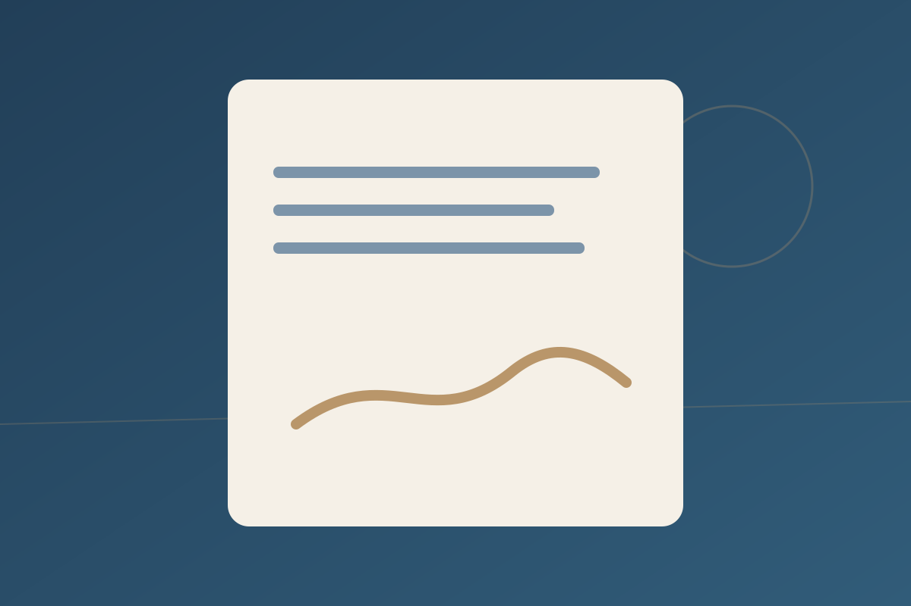
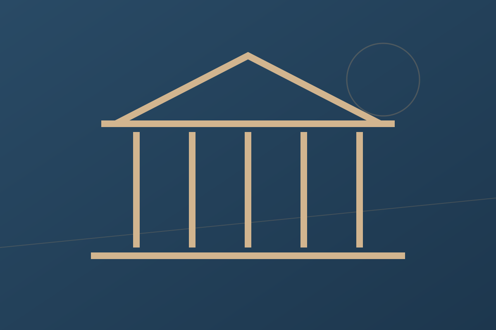
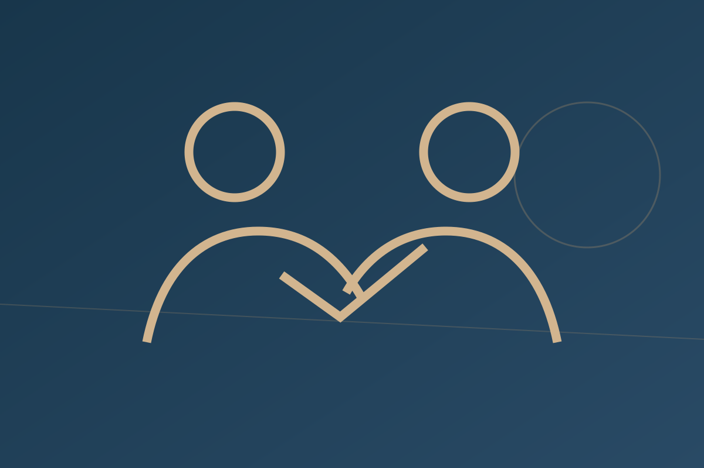
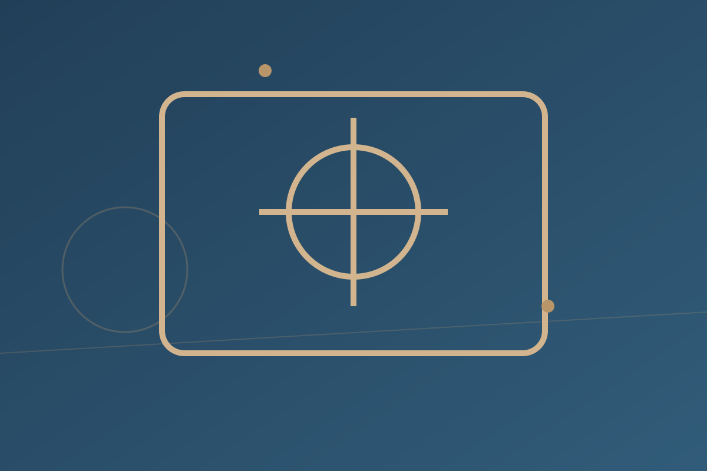

01
Detailed legal analysis
Understand the law, the facts, the evidence and the practical objective.

04 / Why choose Bobderek
Detailed legal analysis, mediation thinking, commercial awareness and clear communication.
Our standard
The approach is built around preparation, legal analysis, dispute-resolution thinking, commercial context and clear client communication.

01
Understand the law, the facts, the evidence and the practical objective.

02
Assess litigation, mediation and negotiation as parts of a complete dispute strategy.
03
Consider how legal choices affect organisations, transactions, reputation and investment.
04
A personal legal service built around clear communication and responsive engagement.
05
Identify duties and risk early, before they become disputes or regulatory problems.

06
Connect established legal principles with AI, digital governance, blockchain, media and emerging technology.
Professional profile
The supplied profile records over five years of experience in litigation, dispute resolution, compliance and corporate advisory, together with mediation training and broad legal interests.
The objective is not legal theatre. It is to understand the issue, identify options and help the client move forward with informed confidence.
The objective is to understand the issue, identify realistic options and help the client move forward with informed confidence.
Start a conversation ↗